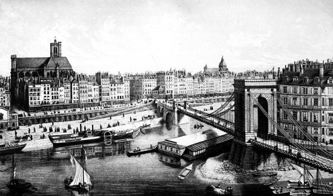
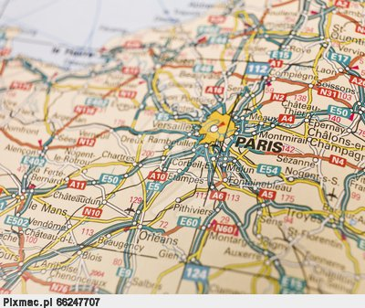
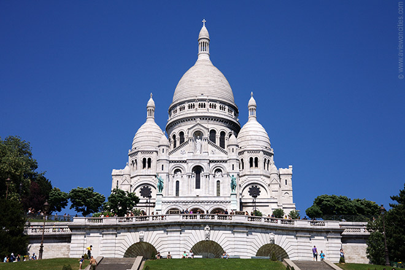
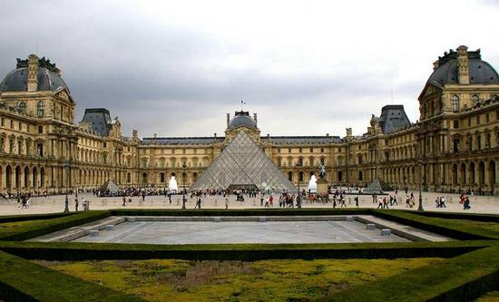
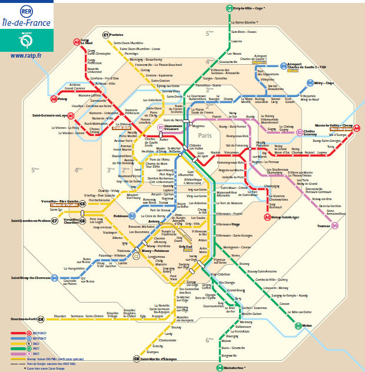

Paryż to stolica i największa aglomeracja Francji. Stanowi centrum polityczne, ekonomiczne i kulturalne kraju. Na obszarze 105,4 km2 mieszka ponad 2 mln osób. Jest stolicą regionu administracyjego Ile-de-France.
Historia miasta  Paryż pochodzi od wioski celtyckich rybaków z plemienia Parisii. Początki ich działalności datuje się na II wiek p.n.e., kiedy to na miejscu obecnej stolicy Francji założyli osadę Lutetia. Dość szybko została podbita przez Rzymian, którzy określili ją mianem Civitas Parisiorum, czyli miasta Parisii. Miasto miało wloty i upadki. Po raz pierwszy siedzibą państwa Franków zostało w 484 roku, by po ich upadku aż na 500 lat stracić status stołeczny. Dynamiczny rozwój datowany jest na XI i XII wiek. Wtedy to rozpoczęto budowę katedry Notre Dame, a później Saint Chapelle. Nieco później miasto dostało się w ręce Anglików, ale ich okupacja trwałą zaledwie 12 lat. W XV stuleciu Paryż ponownie przeżył gwałtowny rozwój. Chociaż w XIX wieku trwały wojny napoleońskie oraz doszło do ponownej okupacji miasta, to jednak w 1846 roku zamieszkiwało tu już milion mieszkańców. Czternaście lat później ukształtował się ostatecznie dzisiejszy podział administracyjny miasta na 20 dzielnic. Doniosłym wydarzeniem było także otwarcie wieży Eiffla w 1889 roku oraz zameldowanie w 1912 roku ponad 3 milionów osób. W czasie wojen Paryż miał niebywałe szczęście, bowiem praktycznie nie został zniszczony, mimo iż miasto znajdowało się pod okupacją hitlerowską. Do góry Warunki geograficzne w mieście  Paryż jest podzielony przez Sekwanę. Panuje tu klimat umiarkowany ciepły morski, na który duży wpływ ma Prąd Północnoatlantycki. Można go opisać jako łagodny i umiarkowanie wilgotny. Lato jest zazwyczaj ciepłe i przyjemne ze średnimi najwyższymi temperaturami pomiędzy 15 a 25 °C z dużym nasłonecznieniem. Mimo wszystko każdego roku występują temperatury powyżej 30 °C. Wiosną i jesienią występują zazwyczaj łagodne dni i świeże noce, choć się zmieniają i są niestabilne. W obu porach roku często jest nieoczekiwanie zimno i chłodno. W zimie nasłonecznienie jest małe; dni są chłodne, ale temperatura wynosi ok. 7 °C. Kilka dni w roku temperatura spada poniżej 0 °C. Rzadko pada tu śnieg, choć czasami występują tu opady śniegu bez akumulacji. Deszcz pada przez cały rok i, choć Paryż nie jest deszczowym miastem, to jest on znany z nagłych, obfitych deszczy. Średnia roczna suma opadów wynosi ok. 652 mm przy niewielkich opadach rozmieszczonych równomiernie przez cały rok. Do góry Zabytki  Wieża Eiffla - najbardziej znany obiekt architektoniczny Paryża, rozpoznawany również jako symbol Francji. Jest najwyższą budowlą w Paryżu i piątą co do wysokości we Francji. W momencie powstania była najwyższą wieżą na świecie. „Żelazna dama” stoi w zachodniej części miasta, nad Sekwaną, na północno-zachodnim krańcu Pola Marsowego.
Wieżę zbudowano specjalnie na paryską wystawę światową w 1889 roku. Miała upamiętnić setną rocznicę rewolucji francuskiej oraz zademonstrować poziom wiedzy inżynierskiej i możliwości techniczne epoki, być symbolem ówczesnej potęgi gospodarczej i naukowo-technicznej Francji.
Do góry Atrakcje
W Paryżu można odwiedzić:
 Do góry Transport  Transport w Paryżu zapewnia bardzo rozwinięta sieć metra oraz kolej miejska RER. Ponandto funkcjonują tu także 4 linie tramwajowe oraz ponad 300 linii autobusowych. Po Skewanie kursują też staki, wykorzystywane przez turystów. Z i do miasta dojeżdżają też szybkie pociągi dalekobieżne TGV. Miasto otaczają 3 autostrady. Paryż jest obsługiwany przez 3 lotniska. Do góry Ceny Walutą obowiązującą w Paryżu jest euro.
|
{kind=link}
{kind=link}
{kind=link}